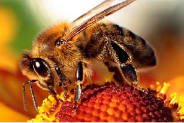
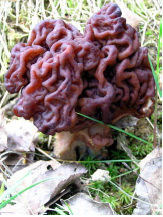

(i)
An alarm pheromone in the honey bee
(102)
A(46)B(74)


(b) Each of the following natural products undergoes hydrolysis to give different products. Suggest structures for the products using their molecular masses (shown in brackets) to guide you.
An alarm pheromone in the honey bee
(102)
A sex pheromone of the olive fly
(156)
Gyromitrin – a toxin found
in a number of fungi.
(114)
Allantoin – an excretory product
found in the urine of most
mammals except higher primates
(158)